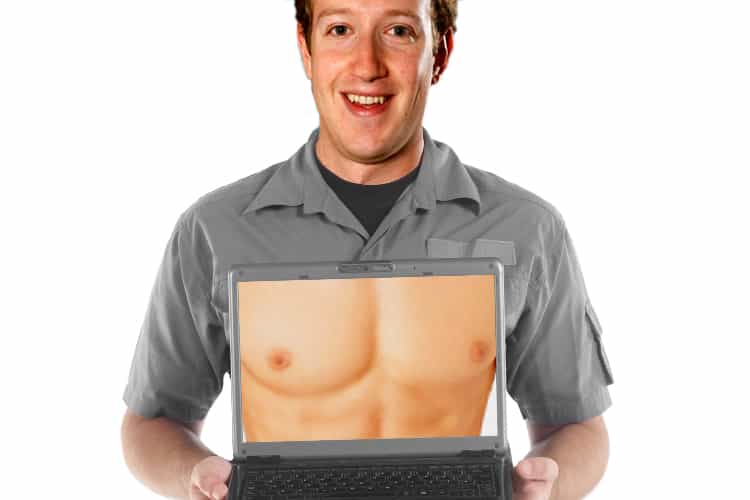

Eric is a self-employed artist who writes about modern culture. You can follow him on twitter.


When I first got on OKCupid, I sent out a few messages and got no replies. Since I was curious why, I decided to make a fake account as a woman. I used some photos of a moderately cute female model. I wrote the profile by cutting and pasting text from a girl on the opposite coast. Then I waited, and watched the response.
Within days, my fake account had close to a hundred messages.
No wonder I wasn’t getting replies – I couldn’t even read all the messages my fake account was getting. When I actually did look at the messages, they were terrible. The profile only gets a couple messages a week now, but they’re still awful. Here are a few recent ones:
Hiiii I’m Johnny 😉
[…]
you have a rare beauty
[…]
Hey my name is rob. You are really beautiful and i was wondering if you would like to get to know eachother and maybe have some fun in the bedroom sometime 😉
[…]
your main profile picture is captivating! You have great eyes!
[…]
you wanna get dicked down or what?
[…]
hi
[…]
Want to grab a coffee or drinks sometime?
[…]
hello beautiful
[…]
Heyy how are you? You seem lovely 🙂
If you think a normal girl would respond to any of these openers, please seek therapy from a qualified professional. I’d say take yourself out of the gene pool, but that would be redundant.
I made this account three years ago. Online dating has only grown since then.
Online dating allows men to do hundreds of low-risk approaches in minutes each day of girls they might not otherwise meet. It also allows women to receive hundreds of approaches from men who would never approach her in real life.
This dynamic hurts men by numbing their social skills. Men who would normally have to learn real world social cues, overcome social challenges, and interact with women face to face, are able to sit at home, blast twenty messages a day, and avoid self-improvement.
This dynamic hurts women by inflating their egos. Women who would normally receive zero male attention are able to get hundreds of offers for sex and validation from desperate men. By using deceptive camera angles and words like “curvy” rather than fat, secret internet fatties are able to experience male attention as if they were actually attractive.
When it comes to validation, every site is a dating site for women. Girls posting their pictures on Facebook, Instagram, and Tumblr get as much, if not more validation than they would from men on online dating sites. Plus, the validation on social networks is public, allowing women to show it off to their friends and social circle.
The models I’m friends with on Facebook regularly receive a hundred likes and comments from men on each photo they post – but they only “like” the comments that have game. When a girl who’d been in an Axe Body-Spray commercial as “the hot chick” posted her new selfie the only comment she liked was a guy who simply wrote “gross.” Two weeks later, there were photos on Facebook of them making out at a trendy LA Club, which none of her beta orbiters “liked.”
Social networks and online dating exaggerate existing imbalances in the sexual marketplace. The rich get richer and the poor get poorer. Before social networking and online dating, an attractive woman might have a couple of men to choose in her social circle. Now she has two-hundred on Tinder. A regular guy interested in her has to cut through the noise of hundreds of thirsty betas.
Fortunately, that’s all beta attention is – just noise.

Imagine you lived in a world full of fat chicks (for many, this won’t require much imagination). Imagine that these fat women were constantly eye-fucking you, making passes at you, and trying to molest your dick. Now imagine a cute girl-next-door type walks up and starts talking to you.
Do the fat chicks hurt her chances? Of course not, because they aren’t attractive. Sure, getting hit on by a fat chick might be validating, but most men wouldn’t take her attempt seriously. In fact, it might even hurt your self-image. “Why do these losers think they could get with me?” Ah, now you’re thinking bitchy hot girl thoughts.
Fucking a beta chump is about as exciting to women as fucking a land-whale is to you. If you’re a man with game, some omega writing “hi – ur hot!” on OKCupid doesn’t hurt your chances any more than a fatty waddling up to you hurts the chances of a lingerie model who wants to fuck you.
Getting hit on all the time might sound like a fantasy, but would you really want ugly women hitting on you when you’re just trying to buy coffee or ride the bus? Women might be validated by betas, but they’re not turned on by them. And women love sex.
The experience of an attractive woman is constant male attention from dudes who can’t even act normal around her. A low hum of desperation. It’s the same feeling you get when you pass a homeless person mumbling “change.” You don’t even notice him. Most people have learned to block out the homeless who are thirsty for money, the way most women have learned to block out men who are thirsty for sex.
Game actually works better on attractive women. They’re so used to horrible approaches, that they appreciate the contrast of a confident man more, the way you’d appreciate a beautiful feminine woman more if you lived in a land of rude androgynous fatties. (Again, not much imagination required.)
Men will board a plane and go live in a foreign country just because the women are more feminine. Women will write love letters to convicted murderers just to experience a few minutes of alpha. The dynamics are the same. Betas are the fat chicks of the dating world – and there are more betas than ever.
Thirsty omegas actually inflate your worth in the sexual marketplace, the same way the obesity epidemic inflates the value of attractive women.
In every society, the men and women deserve each other. Although American women are worse than ever, American men are too. Most are emasculated, unassertive, and unattractive. If you’re interested in game, self-development, or reading a site like this, you’re already in the top 10%. You’re the “hot girl.”
Remember how I said online dating hurts men? The same way social networks inflate women’s egos, technological distractions harm men’s self-improvement.
Pornography and video games allow men to receive a false sense of accomplishment. Men who’ve never lifted a barbell can log onto World of Warcarft and live as a warrior-god ravaging the plains of Azeroth. Men who’d never meet a model in real life can now watch twenty having an orgy in two clicks. Between Call of Duty and Bang Bus, it’s amazing men even make it out of their parent’s basement. Think modernity is making women worse? The same social and technological forces are affecting men too.
If you have game, you have more sexual opportunity than ever before in recorded history. Only in the past sixty years has safe affordable birth control become commonplace, only in the past twenty has casual sex become the norm, and only in the past five have you been able to go online and contact hundreds of women from around the world using your phone.
When I first tried online dating, I was just starting my journey with game. I spent the following years improving myself, approaching, and learning. Now, getting laid through online dating is as easy as ordering a pizza. Looking back, it wasn’t online dating that needed to change, it was me.
Yes, if you only spend time online, your social skills will atrophy. But you can’t put your dick in a computer. Do online dating right, and you’ll have lots of real world sexual experiences to show for it. Technology is creating new challenges, but ruining game isn’t one of them. Game is more powerful than ever.
Read More: The 5 Commandments Of Online Dating